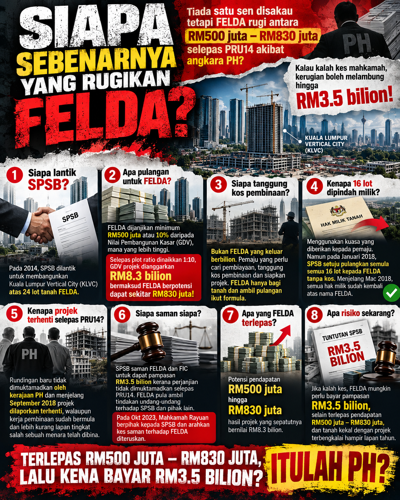

Tiada Wang yang Didakwa Disakau, Tetapi Benarkah FELDA Berdepan Risiko Kehilangan Potensi Pendapatan Ratusan Juta Ringgit Akibat Projek KLVC?

Pada 2014, projek Kuala Lumpur Vertical City (KLVC) melibatkan 24 lot tanah FELDA dengan jangkaan Nilai Pembangunan Kasar (GDV) sekitar RM8.3 bilion.
Berdasarkan formula asal, FELDA berpotensi menerima pulangan minimum RM500 juta atau 10% daripada GDV, bergantung pada nilai yang lebih tinggi.
GDV projek: sekitar RM8.3 bilion
Potensi pulangan FELDA: minimum RM500 juta atau 10% daripada GDV, bergantung pada formula yang dinyatakan
Malah, tanah yang menjadi kontroversi itu telah dikembalikan kepada FELDA sebelum PRU14.
Namun, mengapa projek yang sudah memulakan pembinaan akhirnya terhenti selepas pertukaran kerajaan?
Lebih besar persoalannya: apabila SPSB memfailkan saman menuntut pampasan RM3.5 bilion terhadap FELDA dan FIC, apakah implikasi kewangan yang mungkin ditanggung jika tuntutan itu berjaya?
Adakah isu ini sekadar pertikaian pemilikan tanah, atau turut melibatkan persoalan tentang potensi pendapatan FELDA, keputusan meneruskan projek dan tanggungjawab terhadap kepentingan peneroka?
Akhirnya, siapa yang menanggung kesan apabila projek bernilai berbilion ringgit terhenti, sedangkan tanah dan peluang pembangunan sepatutnya memberi pulangan kepada FELDA?
Potensi pulangan berdasarkan angka dan formula yang dinyatakan, berbanding tuntutan pampasan sebanyak RM3.5 bilion.
Persoalannya, apakah pengajaran daripada kes KLVC ini dan siapa yang harus bertanggungjawab?